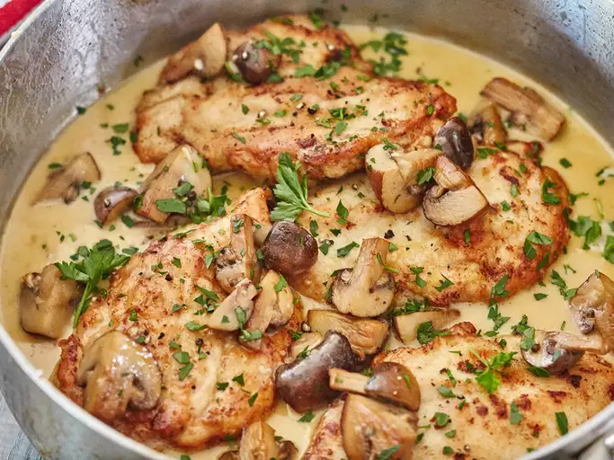

Chicken Marsala Rice Casserole
Home

Description
This chicken Marsala rice casserole is a delicious variant on chicken and mushrooms.
Baked with cremini mushrooms and Marsala wine for a pop of flavor, this dish feels
like a creamy risotto and is very satisfying.
Ingredients
- 2 ½ pounds skinless, boneless chicken breasts or thighs
- 1 ½ teaspoons salt, divided
- 1 teaspoon freshly ground black pepper, divided
- 4 tablespoons olive oil, divided
- 2 tablespoons salted butter
- 1 pound cremini mushrooms, sliced
- 2 shallot, minced
- 4 cloves garlic, minced
- 2 teaspoons chopped fresh thyme
- ½ teaspoon crushed red pepper (optional)
- 1 cup dry Marsala wine
- 1 cup heavy cream
- 2 cups dry long-grain white rice
- 4 cups reduced-sodium chicken broth
- chopped fresh Italian parsley
Steps
- Preheat the oven to 350 degrees F (175 degrees C). Sprinkle chicken with 1/4 teaspoon salt
and 1/4 teaspoon pepper.
- Heat 1 tablespoon olive oil in an oven-safe 12-inch skillet over medium-high heat.
Add chicken and cook until browned, 2 to 3 minutes per side (chicken will not be done
at this point). Remove chicken from skillet.
- Add remaining 1 tablespoon olive oil and butter to skillet. When hot, add mushrooms,
remaining 1/2 teaspoon salt and 1/4 teaspoon pepper to skillet. Cook and stir until
mushrooms are tender and liquid has evaporated, 3 minutes.
- Add shallot, garlic, thyme, and crushed red pepper to skillet. Cook and stir until
tender and aromatic, 1 to 2 minutes.
- Add wine and cream to skillet. Stir with a wooden spoon to scrape up any browned bits
from the bottom of the skillet. Bring to boiling. Reduce heat to medium and simmer
until liquid has reduced by half, 5 minutes.
- Stir in rice. Add broth to the skillet. Return to boiling over high heat. Remove skillet
from heat. Return chicken to the skillet and cover with a lid.
- Bake in the preheated oven until rice is tender, 45 to 50 minutes. Slice chicken and return
to skillet. Garnish with parsley.